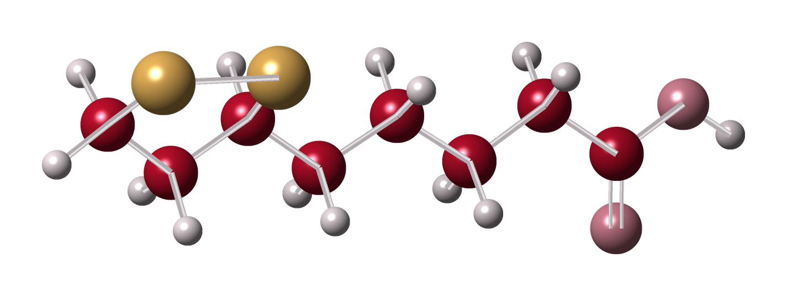
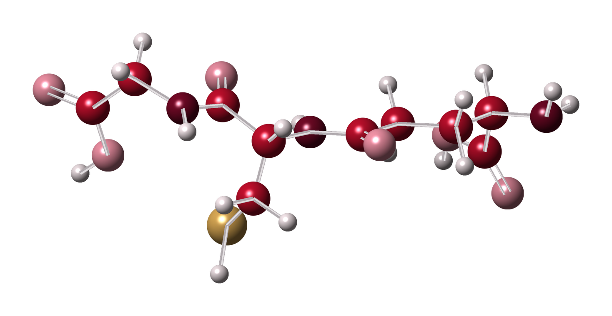
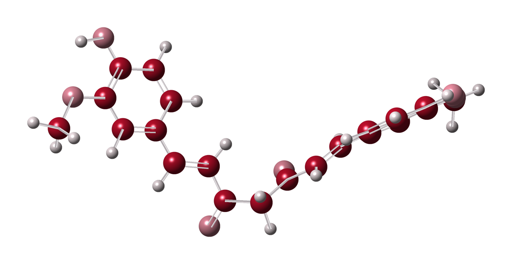
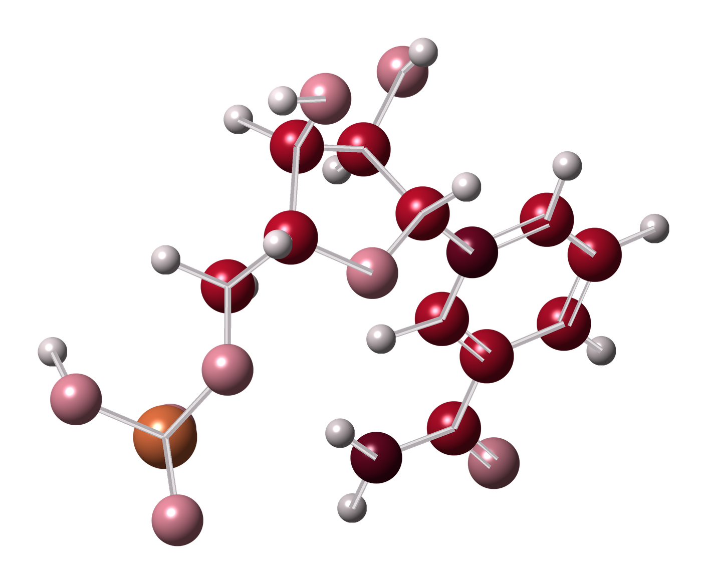
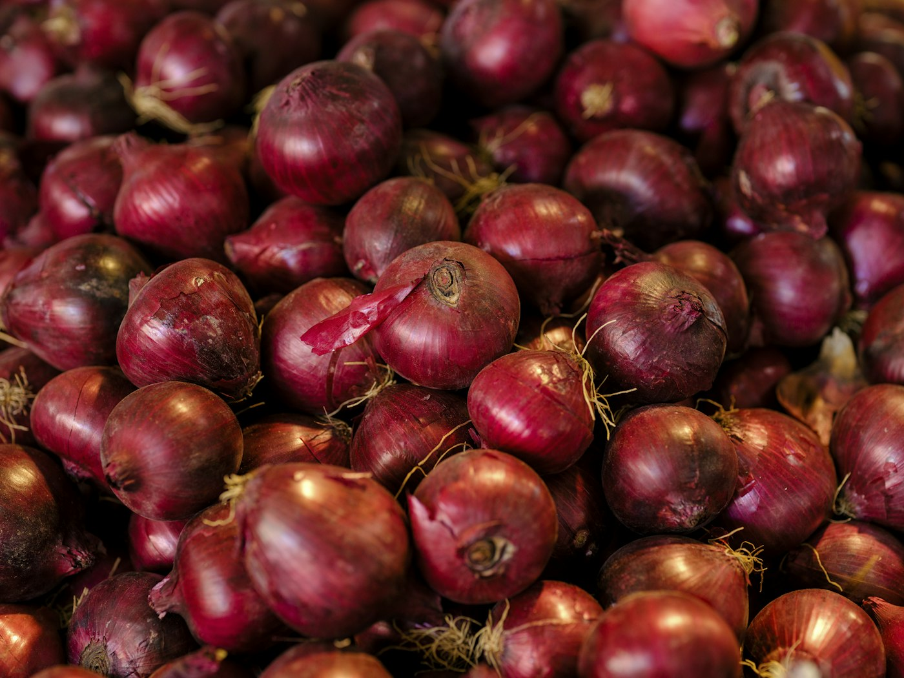
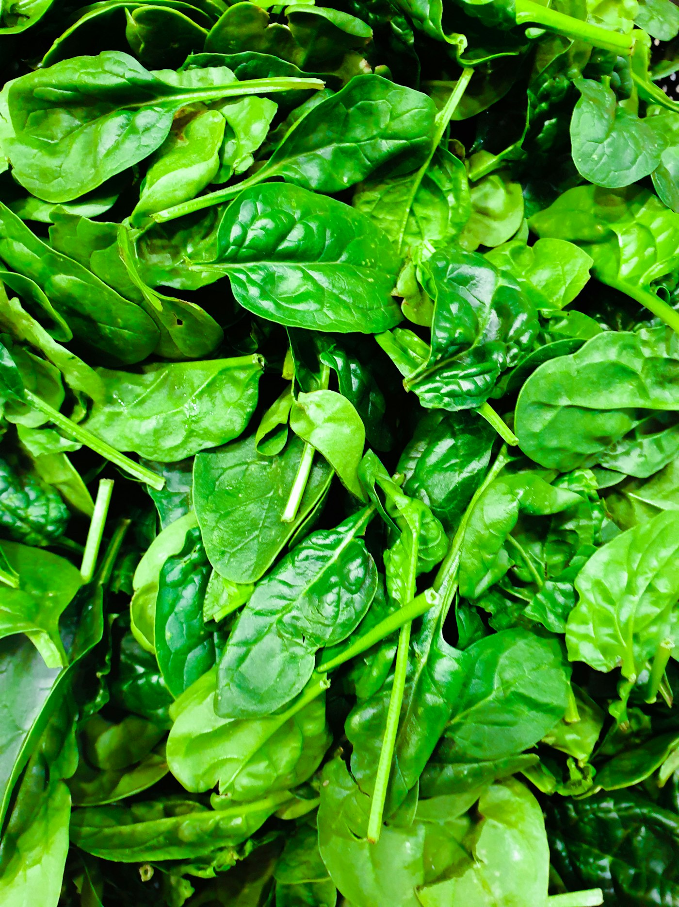

매일 한 포로 시작하는
롱제비티 루틴
DAILY-RITUAL

따로 챙기던 다섯 가지 원료를 하나로,
5가지 핵심 원료를 담은 석류맛 젤리스틱 한 포
알파리포산부터 NMN까지 따로 챙기던
다섯 통을 이제 한 포로!
5가지 핵심 원료를 한 번에 담은 Inner:Era
이제 당신의 데일리 리추얼로!





Five ingredients, five bottles
따로 챙기면 다섯 가지

One stick, every day
이너에라는 하루 한 포


하루하루,
쌓여가는 나의 시간
챙겨야 할 원료는 많은데, 통마다 따로 먹기 번거로워요
무엇부터 챙겨야 할지 잘 모르겠어요
지금의 나보다, 10년 뒤의 나를 위해 준비하고 싶어요
미래의 나를 위한 관리,
무엇부터 챙길지 고민되셨나요?
연구 논문으로 살펴본
다섯 가지 핵심 원료
글루타치온
퀘르세틴
커큐민
알파리포산
NMN
PubMed에서 제목·초록에 원료 이름이 들어간 논문은
다섯 원료를 합쳐 25만 편이 넘습니다.
이너에라는 이 다섯 가지를 한 포에 담았습니다.
*출처 : PubMed 제목·초록 검색 기준, 2026년 10월 (세로축은 로그 눈금, 바닥선 1,000편)
*상기 내용은 제품이 아닌 원료에 대한 정보입니다.
비타민 B3 계열에서 만들어지는
NAD+의 전구체로 연구되는 성분
NMN
(나이아신)
분자량 334.22
전구체로 연구됨
NMN은 니코틴아마이드 모노뉴클레오타이드의 줄임말로,
비타민 B3 계열에서 만들어지는 뉴클레오타이드입니다.
브로콜리·에다마메·아보카도 등에 미량 들어 있습니다.
*상기 내용은 제품이 아닌 원료에 대한 정보입니다.
Inner:Era는 5가지 핵심 원료를
한 포에 담았습니다.

알파리포산 · 글루타치온 · 커큐민 · 퀘르세틴 · NMN,
따로 챙길 필요 없이 하루 한 포로 간편하게.
*상기 내용은 제품이 아닌 원료에 대한 정보입니다.
한눈에 비교하는
5가지 핵심 원료
| 알파리포산ALA | 글루타치온Glutathione | 커큐민Curcumin | 퀘르세틴Quercetin |
NMNNicotinamide Mononucleotide | |
|---|---|---|---|---|---|
| 분자식 | C8H14O2S2 | C10H17N3O6S | C21H20O6 | C15H10O7 | C11H15N2O8P |
| 분자량 | 206.3 | 307.33 | 368.4 | 302.23 | 334.22 |
| 분류 | 황 고리 지방산 | 트리펩타이드 | 폴리페놀 | 플라보놀 | 뉴클레오타이드 |
| 자연 속 유래 | 시금치· 브로콜리 | 효모 | 강황 뿌리줄기 | 양파 껍질· 사과·케이퍼 | 브로콜리· 에다마메·아보카도 |
| PubMed 논문 수 | 7,399편 | 180,343편 | 28,845편 | 33,390편 | 1,548편 |
*분자식·분자량 : PubChem / 논문 수 : PubMed 제목·초록 검색 기준, 2026년 10월
*상기 내용은 제품이 아닌 원료에 대한 정보입니다.
Inner:Era 한 포에 들어간
ORIGIN
자연 속 어디에서 왔을까?



강황 뿌리줄기 · 커큐민
28,845편
커큐민 PubMed 논문 수
양파 껍질 · 퀘르세틴
33,390편
퀘르세틴 PubMed 논문 수
시금치 · 알파리포산
7,399편
알파리포산 PubMed 논문 수
*논문 수 : PubMed 제목·초록 검색 기준, 2026년 10월
*원료가 자연에서 발견되는 대표 식품을 소개한 것으로, 제품 원료의 원산지를 뜻하지 않습니다.
*커큐민은 강황의 노란 색소 성분, 퀘르세틴은 양파 껍질·사과 등의 플라보놀, 알파리포산은 시금치·브로콜리 등에 미량 들어 있습니다.
*상기 내용은 제품이 아닌 원료에 대한 정보입니다.
간편하게 챙기는 데일리 리추얼
Inner:Era
5가지 핵심 원료로 설계한 데일리 포뮬러

매일 한 포로 챙기는 이너에라 롱지비티
한눈에 보는 제품 정보
석류맛Pomegranate
새콤한 석류맛 젤리스틱입니다.
스틱 윗부분에 EASY CUT 표시가 있어
필요할 때 한 포씩 뜯어 드시면 됩니다.

20 g × 14포총 280 g
1포 20 g 젤리스틱 14포가
한 상자에 들어 있습니다.
스틱마다 EASY CUT 표시가 있습니다.
GIP-01 특허원료HACCP
GIP-01 특허원료를 사용했습니다.
(특허 제10-2951534호)
식품의약품안전처
HACCP 안전관리인증 제품입니다.
이너에라 롱지비티는 건강기능식품이 아닌 일반식품입니다.